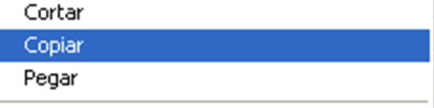
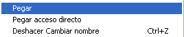
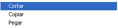

Trasladar Archivos

Las operaciones que más veces realizará a lo largo de su vida como usuario de una computadora es copiar, cortar y pegar un archivo de un lugar a otro de su computadora.
Las tres funciones son validas, pero hay una diferencia en la forma de procesar las mismas y, sobre todo, en las consecuencias que puede acarrear un corte de energía, por ejemplo durante su ejecución.
Por supuesto, hay que referirse al caso en el que realmente lo que queremos es mover una serie de archivos de una carpeta a otra o mover una serie de archivos y/o carpetas de una unidad a otra, ya que si lo que se quiere es copiarlas solamente la opción no tiene dudas.
Pero si lo que se desea es mover una información de una ubicación a otra, se tiene ambas opciones:
- Copiar y Pegar
- Cortar y Pegar
Copiar y Pegar
Esta opción es la más segura, ya que en ningún momento se modifica nada de los archivos originales. Esto significa que ante un fallo del sistema o simplemente ante un corte de energía, las consecuencias son muy poco importantes, a lo sumo se puede encontrar con un archivo a media copia, pero va a ser la copia, nunca el original.


Cortar y Pegar
Esta opción es, en principio, la mejor para realizar este tipo de operaciones, ya que es rápida y sólo necesita de un proceso (cuatro pasos, seleccionar, cortar, elegir destino y pegar), frente a los mínimo cinco pasos de la opción anterior.
El problema se tiene si durante este proceso se produce un fallo del sistema o un corte de energía, y este consiste en que se pierde los archivos que queden por copiar, pero no sólo en la unidad de destino, sino en la unidad de origen, ya que el proceso de cortar estos archivos ya se había efectuado.
